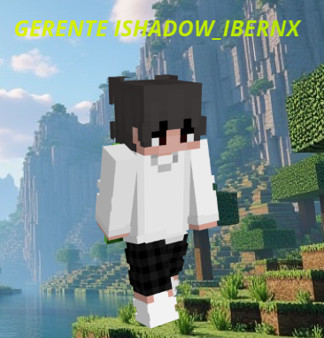

Hola, soy Bernardo.
Me dedico al Staff Team de servidores Minecraft
desde hace más de 3 años, siendo conocido
principalmente como IShadow_IBernx dentro
de diferentes comunidades.
Durante mi trayectoria he formado parte de
distintos equipos Staff, obteniendo experiencia
en cargos como Mod, Sr.Mod, Operador,
Manager y Founder.
Me especializo en liderazgo de equipos,
organización interna y gestión de comunidades,
buscando siempre mejorar la experiencia de los
jugadores y ayudar al crecimiento de los proyectos.
Años en Staff
Servidores
Cargos obtenidos
Compromiso
Mod
Manager
Operador
Mod
Sr.Mod
Operador
ScreenShare Manager / Manager
Founder
Mod
Liderazgo del equipo Staff, organización interna, ascensos y coordinación.
Supervisión general del servidor y apoyo administrativo.
Apoyo a moderadores, revisión de reportes y control del equipo.
Moderación de jugadores, ayuda a la comunidad y cumplimiento de reglas.
Dirección del proyecto, organización general y toma de decisiones.
Me enfoco en mantener una buena comunicación con el Staff y crear un ambiente donde todos puedan mejorar y aportar.
Busco mantener estructuras claras, responsabilidades definidas y un equipo ordenado dentro del servidor.
Analizo problemas y busco soluciones que beneficien al servidor y a la comunidad.
Mi misión es liderar equipos Staff eficientes,
crear una buena organización interna y ayudar
a que los servidores alcancen su máximo potencial.
Busco formar comunidades con un equipo
comprometido, responsable y preparado,
donde exista respeto, comunicación y
trabajo en conjunto.
Discord:
IShadow_IBernx